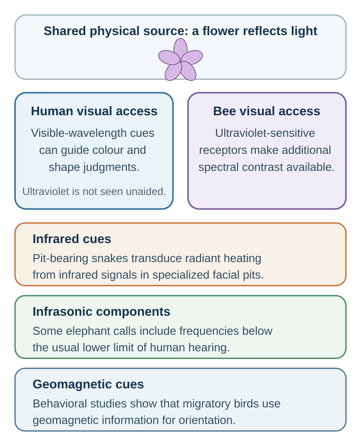

3 Attention: What Becomes Evidence?
What is not selected may fail to enter explicit judgment
“My experience is what I agree to attend to.”
— William James, The Principles of Psychology, 1890, vol. 1, ch. XI, p. 402
You are watching players pass a basketball and counting the passes made by the team in white. Keeping count takes effort because players cross paths and the ball keeps moving. While you follow it, how much of the rest of the scene do you expect to remember?
If you have not seen it before, try the attention demonstration before continuing. Follow its counting instructions, then compare what you noticed with what was present. Familiarity with the demonstration changes what you search for, so a second viewing is a different task.
Careful attention should help us make better use of the evidence in front of us. Yet concentrating on the assigned target can leave something else outside awareness. Doing the task well may still leave us unprepared for a decision that depends on an unexpected event. The challenge is to protect useful focus while creating a way for consequential evidence outside that focus to enter judgment.
Learning goals
- Explain inattentional blindness and change blindness.
- Distinguish top-down selection from bottom-up capture.
- Redesign an information environment so that neglected evidence can enter judgment.
Inattentional blindness: what attention leaves out
Simons and Chabris (1999) varied the counting task, the team observers followed, and the unexpected event: a person with an umbrella or a person in a gorilla suit. Across the 192 observers retained in their main experiment, 46% failed to notice the unexpected event. That is an average across sixteen conditions, not a universal gorilla-miss rate; detection depended on the task and display. The event was available to vision while attention was occupied elsewhere. This is inattentional blindness: failing to notice an unexpected object or event while engaged in another task (Mack & Rock, 1998).
Expertise does not remove this limit. Drew, Võ, and Wolfe (2013) inserted a large gorilla image into lung scans that 24 radiologists inspected for nodules. Eighty-three percent did not report it during the search, although all 24 reported seeing it when shown the gorilla-containing image afterward. Most of those who missed it during the search had looked at its location. The study shows that trained search can coexist with failure to report a conspicuous, unexpected item.
The useful question is therefore how a search task shapes awareness. A person can attend carefully to the assigned target and still miss something consequential outside that target.
Top-down goals and bottom-up capture
Focus is useful because it gives some information priority. The difficulty is that the priority we set and the signals that seize our attention can pull in different directions. To design a better search, we need to understand both influences.
Attention selects and prioritizes information rather than illuminating everything equally. Goals, expectations, and the properties of incoming signals all influence this selection (Broadbent, 1958; Desimone & Duncan, 1995; Kahneman, 1973; Treisman, 1964).
Some selection is top-down: guided by goals, plans, and expectations. If you are searching for your friend in a crowd, your mind is tuned to face shape, height, clothing, or gait. If a radiologist is searching for nodules, the visual system is tuned to nodules. If a negotiator is searching for price concessions, price becomes more visible than timing, warranty, risk-sharing, or relationship value.
Other shifts are bottom-up: striking changes in the environment, such as sudden movement or a loud sound, draw attention. Capture also depends on the task and the observer. A phone notification, a flashing advertisement, a crying baby, a sharp tone, or an angry face can capture attention before conscious choice. Corbetta and Shulman (2002) distinguish between networks involved in goal-directed attention and those involved in stimulus-driven reorienting. In real life, attention reflects the interaction between what we are trying to do and what the world pulls from us.
For the hiring committee, searching for an impressive interview can similarly leave quieter evidence of reliability outside the discussion. Before comparing candidates, specify which observations would count for each job requirement; Chapter 11 examines how an overall impression can otherwise fill those gaps.
When the environment is designed to keep you looking
A notification appears while a student is writing. She opens the message, follows a suggested video, and reaches a feed that loads another screenful whenever she scrolls. Each step is easy; none asks whether she has finished what she came to do. The interruption and the prolonged visit involve different design choices.
The attention economy concerns this competition for limited attention. Where a service earns revenue from advertising or repeated engagement, keeping a person present can serve the provider even when the person would prefer to return to another task. Notifications invite reorientation; autoplay and infinite scroll reduce the pauses at which continuing would require a fresh action. These features can also be convenient. Their value depends on whose purpose they help fulfill.
The notification itself can carry a cost. Stothart and colleagues (2015) found poorer performance on an attention-demanding task when participants received phone notifications, even without directly using the phone. The study tests interruption; it does not establish that every extended visit is compulsive or unwanted.
A useful redesign therefore protects both entry and exit: reserve essential alerts, choose when to check, and restore a stopping point such as a finite queue or an explicit decision to play the next item. Chapter 21 explains how repeated checking can become easier to trigger; Chapter 40 evaluates the whole route from invitation to departure. Judge a redesign by whether it supports the user’s intended activity, not just by whether time on the service falls.
Attention under divided demand
Answering a message while following a class or conversation can feel like an efficient use of otherwise idle moments. But a task can continue on the screen while its content fails to enter memory.
Holding one task in mind leaves less capacity for some competing tasks. Attention, working memory, and control constrain how much information people can use at once (Baddeley, 1992; Cowan, 2001; Marois & Ivanoff, 2005). These limits are most directly demonstrated by comparing performance under single and divided demands.
The classroom provides a more direct test of divided demand.
Students who divide attention between class and digital distractions often learn less. Junco and Cotten (2012) found that multitasking with technology was associated with poorer academic performance. Sana, Weston, and Cepeda (2013) found that laptop multitasking harmed not only the multitasker’s learning but also the learning of nearby students who could see the screen. Gingerich and Lineweaver (2014) experimentally varied classroom texting and found poorer comprehension under texting demands.
Drivers using phones suffer similar limits. Strayer and Johnston (2001) showed that cell phone conversations can impair driving performance, and Strayer, Drews, and Johnston (2003) found that hands-free conversation does not eliminate the attentional cost. The problem is not merely holding a device. It is the diversion of attention from the driving environment.
The same question can be asked of a team. A meeting devoted to quarterly revenue may leave burnout or customer confusion out of discussion, even when the relevant reports are available.
Change blindness
When an important feature of a scene changes while we are watching, we expect to notice. Yet noticing requires us to retain and compare the relevant feature, rather than simply keep looking at the scene.
People often fail to notice changes in a scene when the change occurs during a brief interruption, eye movement, or visual disruption. This is change blindness. Rensink, O’Regan, and Clark (1997) demonstrated that large changes can go unnoticed when attention is not directed to the changing feature. Simons and Levin (1998) famously showed that people giving directions to a stranger often failed to notice when the stranger was replaced by a different person during a brief interruption.
A change therefore has to be detected against what the observer encoded and retained. “Look carefully” gives less guidance than a specific search target, but every target also has a cost: it can draw attention away from something else. A second pass or an independent observer may help when the missed category matters.
Available information is not complete information

Even a perfect search of the available information could miss a consequential signal if the sensory or measurement system never captured it. Before asking whether we noticed everything, we therefore need to ask what the system made possible to notice.
Attention filters information that a sensory or measurement system first makes available. That initial sample is already partial. Jakob von Uexküll called an organism’s species-specific perceptual world its Umwelt (von Uexküll, 1934/2010). Bees can use ultraviolet-sensitive vision, pit-bearing snakes detect radiant heating, some elephant calls contain infrasonic components, and migratory birds use geomagnetic cues (Chittka & Menzel, 1992; Gracheva et al., 2010; Payne et al., 1986; Wiltschko & Wiltschko, 2005).

The decision lesson is epistemic humility. People easily confuse what is available with what is complete. We can see a confident presenter but not long-run reliability, a rising price but not fundamental value, attendance but not attention, and the visible cost of prevention but not the harm it averts. Instruments, records, and models can extend perception, but they still need to be attended to and interpreted. The practical question is therefore: What consequential information is absent from the current sensory, metric, or reporting system?
Designing better attention
After discovering a missed risk, a team may promise to pay more attention next time. But making every item more prominent leaves the competition for attention unresolved. A team needs to choose what should receive attention and test whether the design improves detection. Four practical moves follow from that reasoning:
- Protect focus. Remove avoidable capture and reserve focused intervals for high-stakes encoding or comparison.
- Assign the search. Give people distinct roles for evidence, anomalies, risks, stakeholders, assumptions, and implementation rather than expecting everyone to notice everything.
- Change the question and representation. A hiring question about who impressed the committee highlights charisma; a criterion-specific evidence table highlights job-relevant performance. Dashboards and decision aids should place delayed effects, base rates, and opportunity costs beside vivid immediate outcomes.
- Create a second pass. Use a diagnostic timeout, premortem, or independent review before closure, then connect feedback to the original observation or forecast (Gawande, 2009; Klein, 2007).
These moves treat attention as an environment and process problem, not merely a personal virtue.
Attention architecture: the organization chooses what can be seen
Meetings and dashboards allocate attention before any participant begins to reason. Five design choices deserve an explicit audit:
| Design choice | What it makes visible | Failure when unmanaged |
|---|---|---|
| Agenda | Which issue counts as the decision problem | The team optimizes the wrong problem. |
| Metrics | What is counted and compared | Important unmeasured consequences disappear. |
| Roles | What each person is expected and permitted to notice | Dissent, anomalies, and stakeholder harms remain silent. |
| Time pressure | Which cues can win quickly | Emotion and salience outrun slower evidence. |
| Representation | Which trade-offs are easy to inspect together | Delayed, probabilistic, or cross-functional effects remain abstract. |
Suppose a project meeting begins with one question: “How do we cut costs?” The team notices supplier prices, headcount, and time spent. Customer trust, safety margin, learning value, and implementation risk become the meeting’s invisible gorilla. The question is not neutral; it defines the search target. A redesigned agenda might ask first, “Which value must this project preserve?” and then examine cost reductions alongside service, risk, learning, and implementation consequences.
| Failure | Mechanism | Design response |
|---|---|---|
| Unexpected event is missed | Search is tuned to another target. | Assign an anomaly role or run a deliberate second scan. |
| Important information never enters discussion | Agenda, metric, or hierarchy filters attention. | Change the question, representation, or speaking order. |
| Divided attention weakens encoding | Competing tasks interrupt encoding and compete for limited capacity. | Protect focused intervals and remove avoidable digital capture. |
| Team closes too early | A coherent interpretation suppresses alternatives. | Use a diagnostic timeout, premortem, or independent review. |
Practice Lab
Audit one consequential meeting, class, dashboard, or screening process. Produce a one-page attention map with four columns: the decision task, what reliably captured attention, what important evidence was easy to miss, and one redesign that would make the neglected signal visible without making everything equally salient. State how you would test whether the redesign improved detection rather than merely shifting the blind spot.
Take it forward
At your next meeting, write down the question everyone seems to be answering. Then name one consequential issue that the question leaves out. Giving that issue a defined place in the agenda is a more testable improvement than asking everyone to concentrate harder.
References cited in this chapter
Attwell, D., & Laughlin, S. B. (2001). An energy budget for signaling in the grey matter of the brain. Journal of Cerebral Blood Flow & Metabolism, 21(10), 1133–1145.
Baddeley, A. (1992). Working memory. Science, 255(5044), 556–559.
Broadbent, D. E. (1958). Perception and communication. Pergamon Press.
Chittka, L., & Menzel, R. (1992). The evolutionary adaptation of flower colours and the insect pollinators’ colour vision. Journal of Comparative Physiology A, 171(2), 171–181.
Corbetta, M., & Shulman, G. L. (2002). Control of goal-directed and stimulus-driven attention in the brain. Nature Reviews Neuroscience, 3(3), 201–215.
Cowan, N. (2001). The magical number 4 in short-term memory: A reconsideration of mental storage capacity. Behavioral and Brain Sciences, 24(1), 87–114.
Desimone, R., & Duncan, J. (1995). Neural mechanisms of selective visual attention. Annual Review of Neuroscience, 18, 193–222.
Drew, T., Võ, M. L.-H., & Wolfe, J. M. (2013). The invisible gorilla strikes again: Sustained inattentional blindness in expert observers. Psychological Science, 24(9), 1848–1853.
Gawande, A. (2009). The checklist manifesto: How to get things right. Metropolitan Books.
Gingerich, A. C., & Lineweaver, T. T. (2014). OMG! Texting in class = U fail :( Empirical evidence that text messaging during class disrupts comprehension. Teaching of Psychology, 41(1), 44–51.
Gracheva, E. O., Ingolia, N. T., Kelly, Y. M., Cordero-Morales, J. F., Hollopeter, G., Chesler, A. T., Sánchez, E. E., Perez, J. C., Weissman, J. S., & Julius, D. (2010). Molecular basis of infrared detection by snakes. Nature, 464(7291), 1006–1011. https://doi.org/10.1038/nature08943
James, W. (1890). The principles of psychology. Henry Holt.
Junco, R., & Cotten, S. R. (2012). No A 4 U: The relationship between multitasking and academic performance. Computers & Education, 59(2), 505–514.
Kahneman, D. (1973). Attention and effort. Prentice-Hall.
Klein, G. (2007). Performing a project premortem. Harvard Business Review, 85(9), 18–19.
Mack, A., & Rock, I. (1998). Inattentional blindness. MIT Press.
Marois, R., & Ivanoff, J. (2005). Capacity limits of information processing in the brain. Trends in Cognitive Sciences, 9(6), 296–305.
Payne, K. B., Langbauer, W. R., Jr., & Thomas, E. M. (1986). Infrasonic calls of the Asian elephant (Elephas maximus). Behavioral Ecology and Sociobiology, 18(4), 297–301. https://doi.org/10.1007/BF00300007
Raichle, M. E., & Gusnard, D. A. (2002). Appraising the brain’s energy budget. Proceedings of the National Academy of Sciences, 99(16), 10237–10239.
Rensink, R. A., O’Regan, J. K., & Clark, J. J. (1997). To see or not to see: The need for attention to perceive changes in scenes. Psychological Science, 8(5), 368–373.
Sana, F., Weston, T., & Cepeda, N. J. (2013). Laptop multitasking hinders classroom learning for both users and nearby peers. Computers & Education, 62, 24–31.
Simons, D. J., & Chabris, C. F. (1999). Gorillas in our midst: Sustained inattentional blindness for dynamic events. Perception, 28(9), 1059–1074.
Simons, D. J., & Levin, D. T. (1998). Failure to detect changes to people during a real-world interaction. Psychonomic Bulletin & Review, 5(4), 644–649.
Stothart, C., Mitchum, A., & Yehnert, C. (2015). The attentional cost of receiving a cell phone notification. Journal of Experimental Psychology: Human Perception and Performance, 41(4), 893–897. https://doi.org/10.1037/xhp0000100
Strayer, D. L., Drews, F. A., & Johnston, W. A. (2003). Cell phone-induced failures of visual attention during simulated driving. Journal of Experimental Psychology: Applied, 9(1), 23–32.
Strayer, D. L., & Johnston, W. A. (2001). Driven to distraction: Dual-task studies of simulated driving and conversing on a cellular telephone. Psychological Science, 12(6), 462–466.
Treisman, A. M. (1964). Monitoring and storage of irrelevant messages in selective attention. Journal of Verbal Learning and Verbal Behavior, 3(6), 449–459.
von Uexküll, J. (2010). A foray into the worlds of animals and humans: With a theory of meaning (J. D. O’Neil, Trans.). University of Minnesota Press. (Original work published 1934)
Wiltschko, R., & Wiltschko, W. (2005). Magnetic orientation and magnetoreception in birds and other animals. Journal of Comparative Physiology A, 191(8), 675–693.
Zheng, J., & Meister, M. (2025). The unbearable slowness of being: Why do we live at 10 bits/s? Neuron, 113(2), 192–204.
The estimates concern different stages, tasks, and definitions of information. They cannot be subtracted to calculate lost information or used to measure the total content of consciousness (Zheng & Meister, 2025).↩︎